Basic SVL
This tutorial will walk through the basics of creating SVL programs. By the end of this tutorial you will know how to
- declare datasets
- create all chart types
- customize charts with titles and axis labels
- split dataset by a categorical variable
- color a dataset by a continuous variable
- normalize temporal fields
- arrange multiple plots in a single output file
And you will learn all of these things working on a real world not-really-cleaned dataset of Bigfoot sightings. This dataset was collected by the Bigfoot Field Researchers Organization (BFRO).
Start by downloading that dataset into the current directory.
wget https://github.com/timothyrenner/svl/raw/docs/sample_data/bigfoot_sightings.csv
The tutorial's been designed to operate on a single file, but it can be split up too.
I'll include a complete version of the state of the file (which I'll name basic_tutorial.svl) at the end of each section.
Boring Stuff
Before I start there's boring stuff I need to cover.
- All keywords in SVL are case-insensitive, but field names, file names, and anything in quotes are not. By convention I will capitalize keywords but it's not required.
- Comments start with
--and extend to the end of the line. - All dataset and field names (basically anything not in quotes) must start with an underscore or letter, and can only contain letters, underscores or digits.
- SVL is not sensitive to tabs or newlines. The entire program could be written on one line if you wanted.
Aside from field and dataset names being case sensitive, this is pretty much just like SQL.
Datasets
An SVL program usually starts with a datset declaration. This tells the compiler where your datsets live and assigns them a label. This isn't required - datsets can be declared as compiler command line arguments, but that will be covered in the advanced SVL tutorial.
If an SVL program has a DATASETS declaration, it must be at the beginning of the program. It looks like this.
DATASETS
bigfoot "bigfoot_sightings.csv"
The name of the dataset is an identifier, and the name of the file must be in quotes.
Naturally this SVL program won't compile - we need some plots first. The next section will walk you through the plot types.
Chart Types
SVL supports six plot types: histogram, scatter, bar, line, number (for all your big number©️ needs), and ... my personal favorite ... pie charts. Don't worry, you can add holes to your pie charts so your friends won't judge.
HISTOGRAM
Histograms are for binning a single variable.
Let's say we want to (and we definitely do) figure out if more bigfoot sightings occur during a particular phase of the moon.
Add this to your basic_tutorial.svl file under the DATASETS declaration.
HISTOGRAM bigfoot -- same name as DATASETS
X moon_phase -- can specify Y for vertical histogram
STEP 0.1 -- optional, can also specify BINS to set number of bins
Compile it with
svl basic_tutorial.svl
and you should see
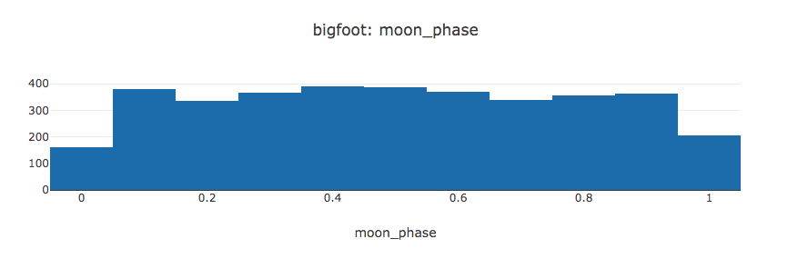
A couple of things to note:
- Axes are declared by
XorYfollowed by the field. This is true of all plot types except pie charts. - Only histograms take a
STEPorBINS, but they aren't required.
SCATTER
Scatter plots need two axes. Suppose we want to see if the southern Sasquatch (colloquially referred to as "skunk ape") prefers warmer temperatures farther south, or if they prefer the same temperature as their Pacific Northwest cousins).
Add this to basic_tutorial.svl underneath the histogram.
SCATTER bigfoot
X latitude
Y temperature_mid
That's it. Compile again and it'll appear right under the histogram.
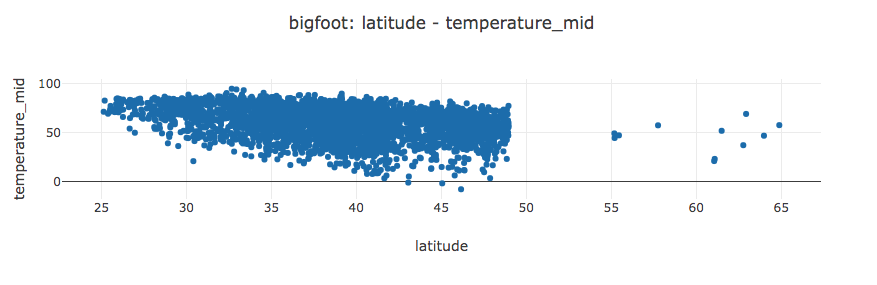
BAR
Bar charts are basically declared the same way as scatter plots, except that they usually appear with aggregations. Bigfoot sighting reports are classified by three types: A, B and C. A is direct evidence, B is indirect evidence, and C is a secondhand account. Suppose we want to count the number of sightings with each classification rating.
BAR bigfoot
X classification
Y number COUNT -- COUNT is an aggregation, number is a field in the dataset.
This plot will count the number of reports for each classification.
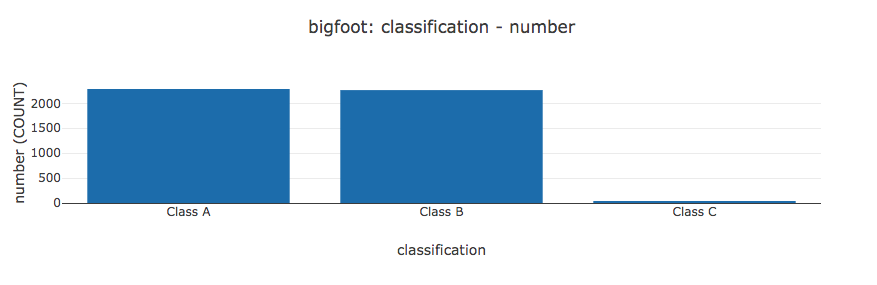
A couple of things to note:
- There are five aggregations:
COUNT,MIN,MAX,AVG,SUM. More will probably be added in the future. - It's probably not a good idea to bar chart continuous variables, but SVL won't stop you.
COUNTshouldn't need the field label but for technical reasons it does. I'll probably fix this at some point in the near future.
LINE
Line charts, like bar charts, usually appear with aggregations. They are good for plotting things like time. If we want to know the number of bigfoot sightings over time, this plot will get us there.
LINE bigfoot
X date BY YEAR
Y number COUNT
This plot counts the number of sightings by year.
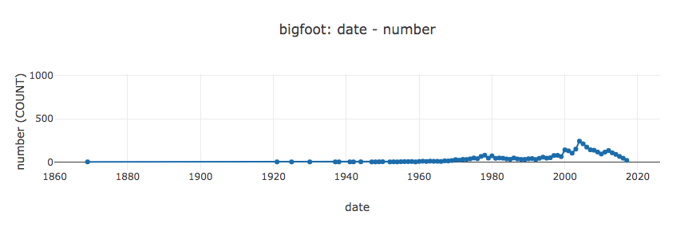
This plot also introduces a temporal transformation.
Basically, SVL truncates each date at the year and then counts each year's worth of sightings.
Currently only YYYY-mm-ddTH:MM:S format is supported but it should be straightforward to support custom formats in the future.
The following temporal transformations are available: YEAR, MONTH, DAY, HOUR, MINUTE, SECOND.
Temporal transformations can be applied to X, Y, COLOR BY and SPLIT BY axes (more on those last two shortly).
PIE
Pie charts are a little different from the others. Basically they count the different values of the axis we select. Suppose we wanted to view the proportion of sighting classifications.
PIE bigfoot
AXIS classification
HOLE 0.3 -- HOLE is only available for pie charts.
We get this
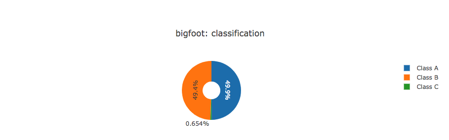
Note:
- Pie charts require
AXISinstead ofXorY. HOLEonly applies to pie charts, and must be values between zero and one.
NUMBER
Number was added a little later than the others, but it's pretty useful. It takes a single value and prints it. That's all. If we want to show a big number©️ for the bigfoot sightings, we could do this.
NUMBER bigfoot
VALUE number COUNT
We get this:
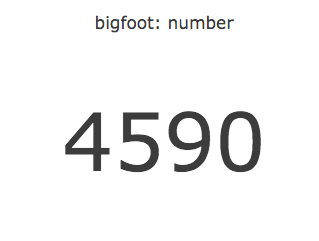
Note:
- Whatever's in
VALUEneeds to be a single number. If not SVL will raise an error.
In Summary
Let's tally up our Bigfoot knowledge.
DATASETS
bigfoot "bigfoot_sightings.csv"
-- Keep in mind the line breaks and tabs are only to make things visually
-- coherent. They're not required by language syntax.
HISTOGRAM bigfoot -- same name as DATASETS
X moon_phase -- can specify Y for vertical histogram
STEP 0.1 -- optional, can also specify BINS to set number of bins
SCATTER bigfoot
X latitude
Y temperature_mid
BAR bigfoot
X classification
Y number COUNT -- COUNT is an aggregation, number is a field in the dataset.
LINE bigfoot
X date BY YEAR
Y number COUNT
PIE bigfoot
AXIS classification
HOLE 0.3 -- HOLE is only available for pie charts.
And this is what it looks like:
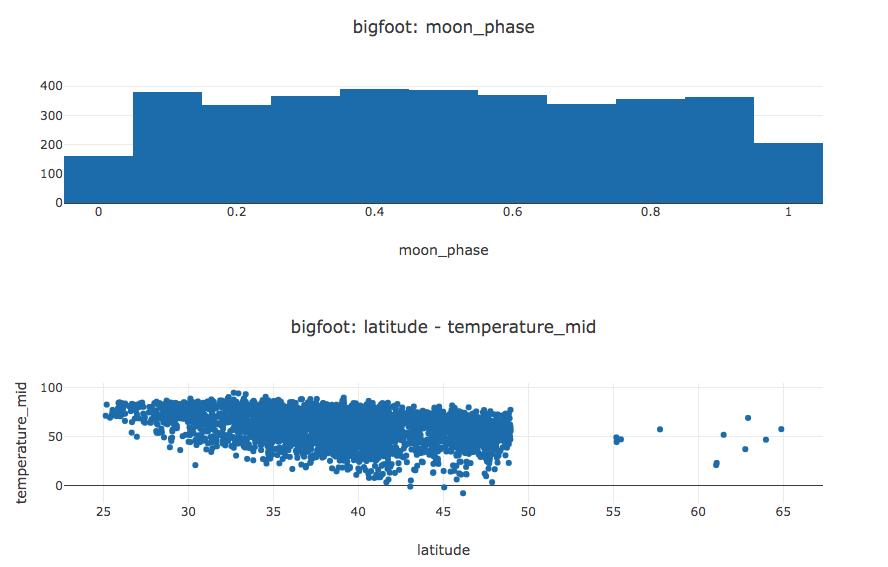 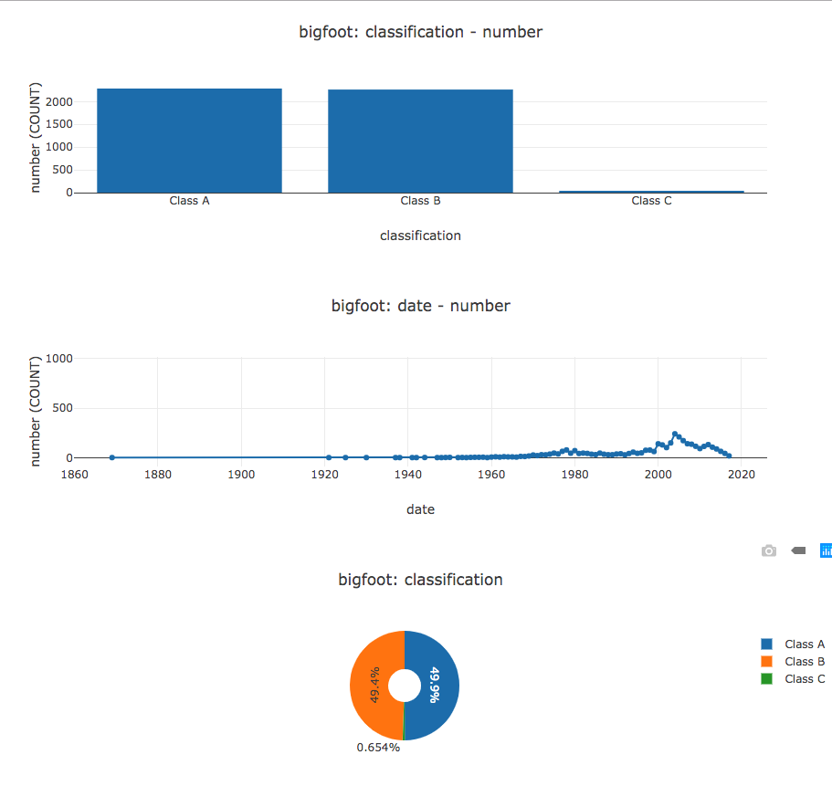
You can view an interactive version here.
A few things that jump out:
- The titles and axis labels aren't pretty. I'll cover how to do that next.
- The plots look stretched and weird. This is partly due to browser window width, and partly due to the fact that some of those plots (looking at you pie chart) don't need that much screen real estate. The "Plot Arrangement" section covers this.
- What if you want multiple lines / bars /etc on one plot - like number of sightings per classification?
SPLIT BYand it's cousinCOLOR BYcover how these additional axes work.
Customizing Charts - Titles and Axis Labels
SVL provides default titles and labels for axes based on the fields in the file, but those aren't the prettiest.
To add some class to your plots, SVL provides the TITLE and LABEL keywords.
Here's a beautified version of our histogram.
HISTOGRAM bigfoot
TITLE "Bigfoot Sighting Moon Phases"
X moon_phase LABEL "Moon Phase"
STEP 0.1
It looks like this:
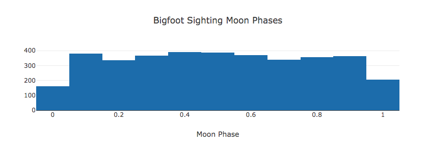
TITLE can appear anywhere after the plot declaration (i.e. HISTOGRAM bigfoot).
LABEL can appear anywhere after the axis declaration (i.e. X moon_phase).
LABEL is valid SVL syntax for SPLIT BY but doesn't do anything for Plotly, because they don't currently have a straightforward way to add legend titles to plots.
✅ VALID AXIS LABEL: X moon_phase LABEL "Moon Phase"
❌ INVALID AXIS LABEL: X LABEL "Moon Phase" moon_phase
For completeness here's a fully beautified example of our earlier results.
DATASETS
-- Path is a little different from tutorial.
bigfoot "sample_data/bigfoot_sightings.csv"
HISTOGRAM bigfoot
TITLE "Bigfoot Sighting Moon Phases"
X moon_phase LABEL "Moon Phase"
STEP 0.1
SCATTER bigfoot
TITLE "Bigfoot Sighting Temperature by Latitude"
X latitude LABEL "Latitude"
Y temperature_mid LABEL "Temperature (F)"
BAR bigfoot
TITLE "Number of Bigfoot Sightings by Classification"
X classification LABEL "Sighting Classification"
Y number COUNT LABEL "Number of Sightings"
LINE bigfoot
X date BY YEAR LABEL "Year of Sighting"
TITLE "Bigfoot Sightings by Year" -- TITLE can go between axes nbd.
Y number COUNT LABEL "Number of Sightings"
PIE bigfoot
TITLE "Number of Bigfoot Sightings by Classification"
AXIS classification LABEL "This gets ignored"
HOLE 0.3
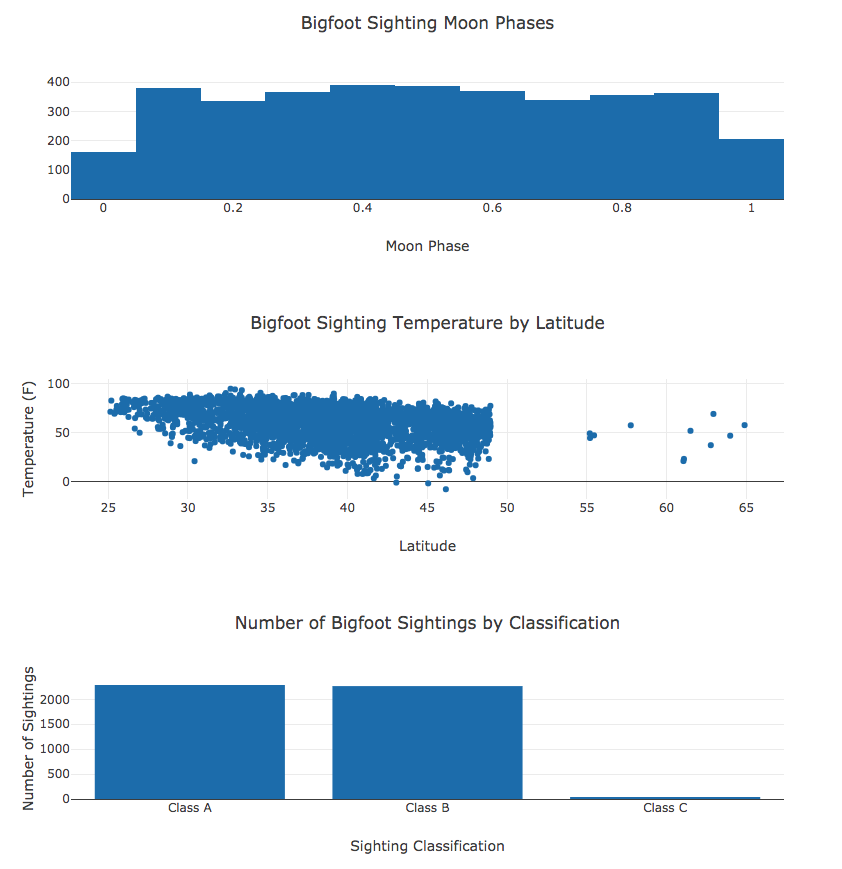 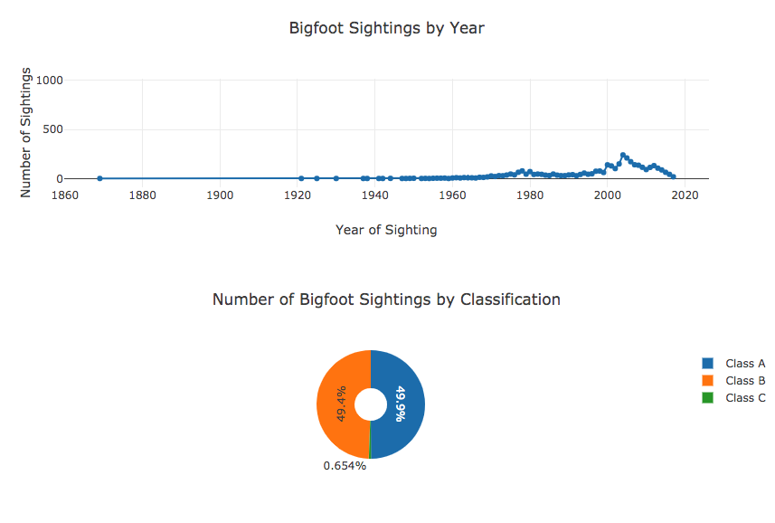
You can see an interactive version of this visualization here.
Plot Arrangement
So far we've been placing the plots one after the other, and SVL has just stacked them. SVL provides a significant amount of control over how plots are laid out, however. In my opinion this is the coolest part of the language.
SVL has a couple of ways of arranging plots to help you make the most of your screen real estate.
SVL supports both vertical and horizontal concatenation, and allows these concatenations to be nested.
The only plots in basic_tutorial.svl that really need the whole width of the screen are the line chart and scatter plot; the others can use a shrinking.
DATASETS
bigfoot "bigfoot_sightings.csv"
LINE bigfoot
X date BY YEAR LABEL "Year of Sighting"
TITLE "Bigfoot Sightings by Year"
Y number COUNT LABEL "Number of Sightings"
-- The CONCAT function performs a horizontal concatenation.
CONCAT(
HISTOGRAM bigfoot
TITLE "Bigfoot Sighting Moon Phases"
X moon_phase LABEL "Moon Phase"
STEP 0.1
BAR bigfoot
TITLE "Number of Bigfoot Sightings by Classification"
X classification LABEL "Sighting Classification"
Y number COUNT LABEL "Number of Sightings"
PIE bigfoot
TITLE "Number of Bigfoot Sightings by Classification"
AXIS classification LABEL "This gets ignored"
HOLE 0.3
)
SCATTER bigfoot
TITLE "Bigfoot Sighting Temperature by Latitude"
X latitude LABEL "Latitude"
Y temperature_mid LABEL "Temperature (F)"
What I've done is switched the order of the plots by putting the line on top and the scatter on the bottom, and placing the bar, pie and histogram in the middle wrapped in a function called CONCAT.
CONCAT horizonally concatenates plots, placing them on the same row.
The above chart looks like this.
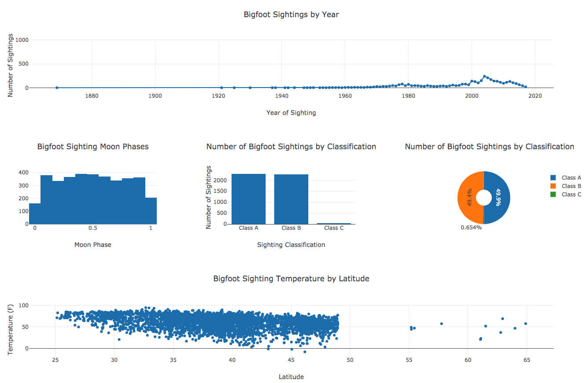
View an interactive version here.
Pretty sweet right? Think of things this way - at the top "level" of nesting there are three rows. The first row haw one plot, so it gets the full width of the page. The middle row has three plots that are horizontally concatenated, so each plot gets a third of the width. The final row just has one, so it takes the full screen.
Let's say we want that histogram to take a little more space, and the bar / pie charts to take a little less. We can nest concatenations. Check this out.
DATASETS
bigfoot "bigfoot_sightings.csv"
LINE bigfoot
X date BY YEAR LABEL "Year of Sighting"
TITLE "Bigfoot Sightings by Year"
Y number COUNT LABEL "Number of Sightings"
CONCAT(
HISTOGRAM bigfoot
TITLE "Bigfoot Sighting Moon Phases"
X moon_phase LABEL "Moon Phase"
STEP 0.1
CONCAT(
BAR bigfoot
TITLE "Number of Bigfoot Sightings by Classification"
X classification LABEL "Sighting Classification"
Y number COUNT LABEL "Number of Sightings"
PIE bigfoot
TITLE "Number of Bigfoot Sightings by Classification"
AXIS classification LABEL "This gets ignored"
HOLE 0.3
)
)
SCATTER bigfoot
TITLE "Bigfoot Sighting Temperature by Latitude"
X latitude LABEL "Latitude"
Y temperature_mid LABEL "Temperature (F)"
What do you think it will look like? The top and bottom rows are the same, but the middle row is now split twice - one half is the histogram, and the other half is split between the bar chart and the pie chart.
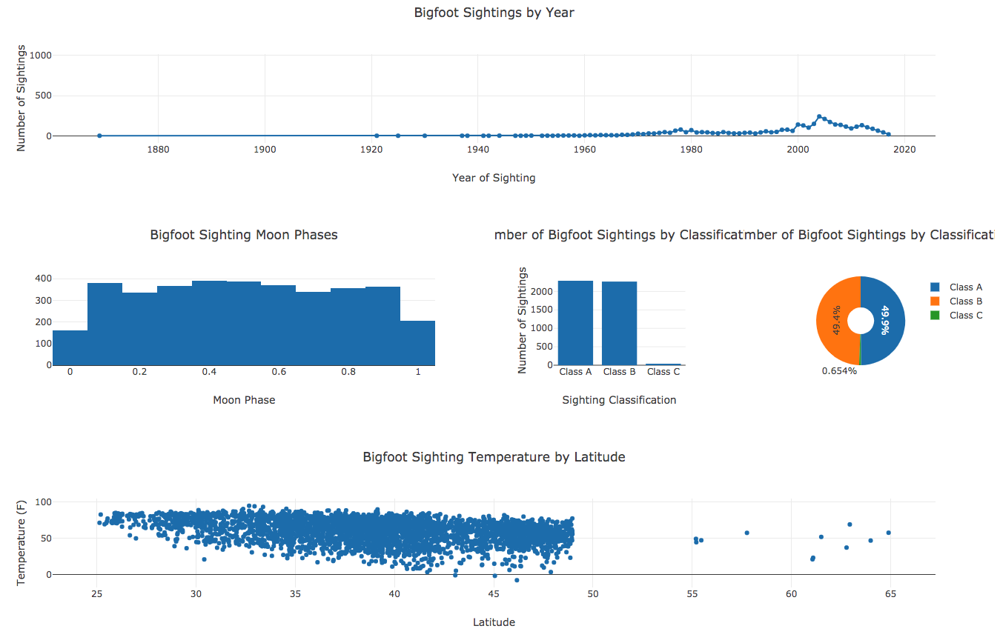
That is what we see (interactive example here), but now there's an unintended side effect: the plot titles are cut off because there's not enough width.
Resizing the browser can fix this, but we can also change the concatenation of those two plots from a horizontal one to a vertical one.
Vertical concatenations are implicit at the top level, but inside a CONCAT there needs to be something to denote vertical vs horizontal concatenation.
This is done using parens.
DATASETS
bigfoot "bigfoot_sightings.csv"
LINE bigfoot
X date BY YEAR LABEL "Year of Sighting"
TITLE "Bigfoot Sightings by Year"
Y number COUNT LABEL "Number of Sightings"
CONCAT(
HISTOGRAM bigfoot
TITLE "Bigfoot Sighting Moon Phases"
X moon_phase LABEL "Moon Phase"
STEP 0.1
-- Same as before, but with CONCAT removed. Now these two are vertically
-- stacked.
(
BAR bigfoot
TITLE "Number of Bigfoot Sightings by Classification"
X classification LABEL "Sighting Classification"
Y number COUNT LABEL "Number of Sightings"
PIE bigfoot
TITLE "Number of Bigfoot Sightings by Classification"
AXIS classification LABEL "This gets ignored"
HOLE 0.3
)
)
SCATTER bigfoot
TITLE "Bigfoot Sighting Temperature by Latitude"
X latitude LABEL "Latitude"
Y temperature_mid LABEL "Temperature (F)"
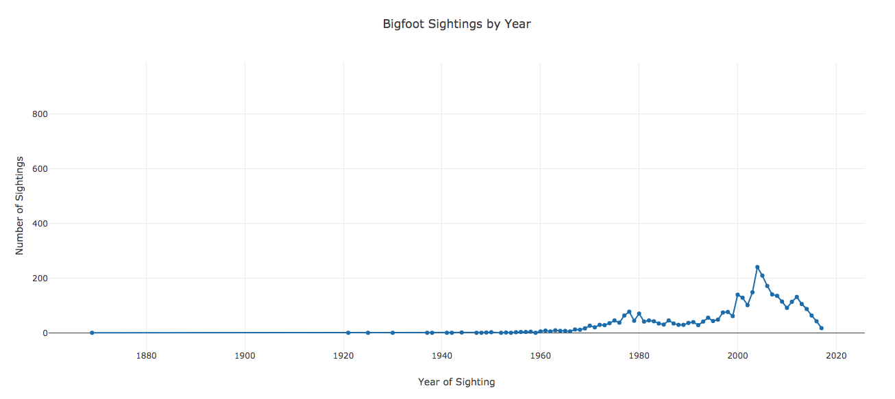 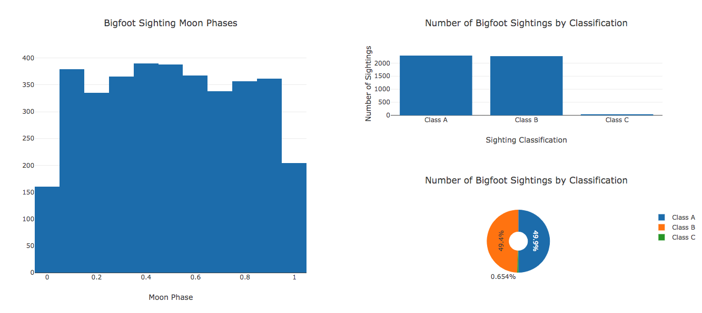 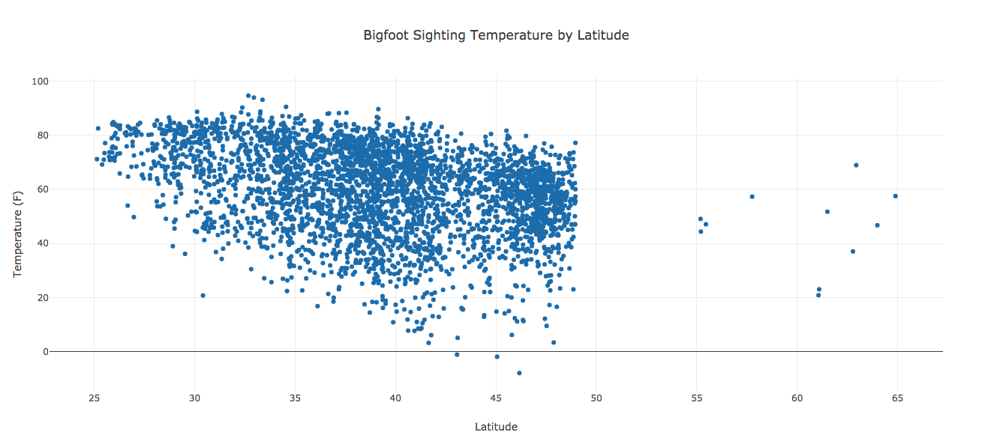
Interactive version here.
Not only did the bar and pie charts stack, every row got taller making the whole page bigger. This happens because there's a minimum plot height. When the most nested plot reaches that minimum height, the entire document will resize to make sure everything remains proportional to what's in the script.
Additional Axes: SPLIT BY and COLOR BY
So now we know a thing or two about Bigfoot - can we go deeper?
Well for one thing it might be worth checking out how the number of sightings by time breaks down by sighting classification.
For that we'd need three lines.
SVL allows us to split a plot by a field's values using a special axis specifier called ... SPLIT BY.
Focusing on just the line plot,
LINE bigfoot
TITLE "Bigfoot Sightings by Year"
X date BY YEAR LABEL "Year of Sighting"
Y number COUNT LABEL "Number of Sightings"
SPLIT BY classification
This splits the data into three lines, one for each classification value.

SPLIT BY is perfect for categorical variables - what about continuous ones?
Suppose we want to overlay the moon phase onto the scatter plot.
Then we'd know for sure if more Bigfoot sightings in Florida happened during a full moon (be honest ... you think it's true).
SVL also has syntax for that - COLOR BY colors the existing points by the specified field.
SCATTER bigfoot
TITLE "Bigfoot Sighting Temperature by Latitude"
X latitude LABEL "Latitude"
Y temperature_mid LABEL "Temperature (F)"
COLOR BY moon_phase "YlOrRd" LABEL "Moon Phase"

For COLOR BY, you can optionally provide a color scale.
It must appear after the axis declaration before any modifiers.
✅ VALID COLOR BY moon_phase "YlOrRd" LABEL "Moon Phase"
❌ INVALID COLOR BY moon_phase LABEL "Moon Phase" "YlOrRd"
❌ INVALID COLOR BY "YlOrRd" moon_phase LABEL "Moon Phase"
All together, the script looks like this...
DATASETS
bigfoot "bigfoot_sightings.csv"
LINE bigfoot
TITLE "Bigfoot Sightings by Year"
X date BY YEAR LABEL "Year of Sighting"
Y number COUNT LABEL "Number of Sightings"
SPLIT BY classification
CONCAT(
HISTOGRAM bigfoot
TITLE "Bigfoot Sighting Moon Phases"
X moon_phase LABEL "Moon Phase"
STEP 0.1
(
BAR bigfoot
TITLE "Number of Bigfoot Sightings by Classification"
X classification LABEL "Sighting Classification"
Y number COUNT LABEL "Number of Sightings"
PIE bigfoot
TITLE "Number of Bigfoot Sightings by Classification"
AXIS classification
HOLE 0.3
)
)
SCATTER bigfoot
TITLE "Bigfoot Sighting Temperature by Latitude"
X latitude LABEL "Latitude"
Y temperature_mid LABEL "Temperature (F)"
COLOR BY moon_phase "YlOrRd" LABEL "Moon Phase"
... and produces plots that look like this:

View an interactive version here.
Conclusion
That's it for the basic SVL tutorial. Here's what we covered.
- The structure of an SVL program.
- The five plot types: histogram, bar, scatter, line and pie.
- Customizing plots with titles and axis labels.
- Arranging plots with
CONCAT. - Additional axes with
SPLIT BYandCOLOR BY.
There are a few questions this tutorial doesn't answer.
- What if I want to sort the results of a plot?
- That line plot has some outliers on the X axis. What if I want to filter the results of a plot?
- What if I don't want to hard code the file name in the script?
- What if I want to transform the data with something other than a temporal transformation?
SVL supports all of the above. That's all covered in the Advanced SVL tutorial.